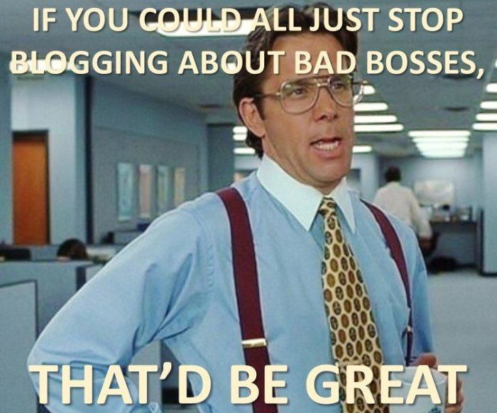

"You know, walk the earth, meet people... get into adventures."


In the United States (and probably other countries) most engineering and technical feats are accomplished by teams of engineers or programmers or designers all working together under management. It is management’s job, amongst other things, to source, hire, and fire the engineering staff, so your average technical guy has absolutely no control over who his coworkers are, other than transferring departments or getting another job.
This can create some problems in the office, and often serves as a flashpoint between women in the workforce, who think they are treated unfairly due to their gender, and men who simply do not want to work with them.
As we here at ROK know, women have been trying to reinvent their role in society. Traditionally, women have been the home-makers and the child-rearers, and the men have been the breadwinners who work the dangerous, dirty jobs. From childhood on up, girls play with dolls, stay clean, and don’t learn anything technical from their fathers. While girls may do sports, any sort of technical activity in their youth is non-existent, although this is largely becoming a problem with all kids today.
Boys traditionally learn to work on cars, keep lawn care equipment running, and maintain a home. All of these things directly translate into a good background in mechanical technology upon which you can build. One of my bosses told me he always looks for co-ops that worked on a farm, because it shows problem solving in a technical environment, and, more importantly, it shows work ethic.
Girls usually don’t have any of this, and so they are more apt to have no base upon which to root their purely theoretical academic degree. This leads to no understanding of specific situations and appropriate actions to take in response. While this is a problem with many college educated people in a technical field, it’s worse with women and hipsters.
One of the popular tropes in industry is borrowing the Mary Sue film character type and assuming that someone just out of college will have a fresh perspective and immediately “think outside the box” and solve everyone’s problems.
“Think outside the box.” As a colleague said in a meeting, you can’t think outside the box when you don’t even know how big your box should be, or how big other peoples’ boxes are. Probably explained best by the Dunning-Kruger effect, it takes knowledge of a subject to be able to critically judge your skill in the subject.
Ignorance truly is bliss. If you don’t know how bad you are, it won’t bother you. If you can coast through a career and blame everything on gender bias, you’ve got a double win.
Here’s the biggest piece of truth that I can jam in this article. Professionally, I, and any other competent engineer I know, don’t care one whit about ANY demographic aspect of any co-worker that doesn’t affect performance. If a coworker is a woman, I’ll check out her tits as a matter of course, but any sort of interest ends there even if she isn’t wearing a ring. A factory environment with 9-to-1 men to women and an HR department just waiting to pounce is no place to run game.
Other than that, the only thing that matters is how well you can do your job. Can I trust you to handle your shit and not screw me over? Can you help me when I need it so there’s a point in me helping you when you need it, or are you just a waste of resources?

A LinkedIn poll showing what percentage of men and women preferred Competence or Confidence.
I’m not paid to do a woman’s job as well as mine. Simple math explains that the amount of work is divided among the workers, and if some of the workers cannot handle their share, management will simply lump it onto the ones that can do it. Couple that with a large company so afraid of lawsuits that they will never fire anyone for lack of performance, and you end up carrying people who are taking up slots that you could have used to hire good workers.
There’s only one thing that can be done with someone who is technically incompetent but not able to be fired, and that’s promote them high enough they can no longer cause any direct damage. I think this is one reason why every topic about women advancing in tech focuses on them being leaders and managers and “leaning in,” as opposed to advancing the normal way, i.e. being good at it.

Bad managers will still wreck things, but it’s like having a bad driver instead of a misfiring cylinder. The failures are bigger and take a little longer to manifest, but they’re still there, and you have to be make sure you jump clear before the crash.
HR demographics are a rigged game. When equality is defined as an excuse to treat men horribly in an ill-considered attempt to balance out a fictitious dystopian vision of the past for women, it is clear that men will never receive fair treatment until significant change occurs. You have to protect yourself.
If you work with a typical female technical type who thinks she knows far more than she does, the best thing to do is to disengage completely. It’s not your battle, nor your responsibility, to make sure her stuff gets done. If she doesn’t ask for help, good; don’t allow her to profit off your expertise. If she does ask, tell her that you’re happy to help, but she needs to go through management to make sure they’re good with you spending time on it. This will probably get her to back off, as she was looking for you to freebie white knight for her while she could take the credit and not look stupid.
Women hate each other.
If you’re told to work with her, attempt to do so. If she rebuffs you (and she will), document this with your boss. “I offer to help every day, but she simply won’t listen.”
Now, if you have to work FOR a female manager who is clueless, you have to hoe a very careful row. You need to strike a balance between being knowledgeable so that she can rely on you, but not be seen as a threat. This is done by doing your homework ahead of time, knowing much more about the topic at hand than she does, and having one-on-one meetings ahead of big meetings so that you can get her approval ahead of time. Note, this meetings should be out of earshot, but within eyesight, of others unless you want to run Seduce Your Boss game.
I’m not a manager, so I don’t have advice for having one of these wonders working for YOU. Arrange a transfer if you can.
Office politics are not a good game to play, and this goes double when any sort of PC or tolerant person is involved, and triple when that person can’t compete normally due to inadequacy. Stay as far away as you can, and document everything when you can’t.
Read More: How A Man Should Build Up His Professional Network.